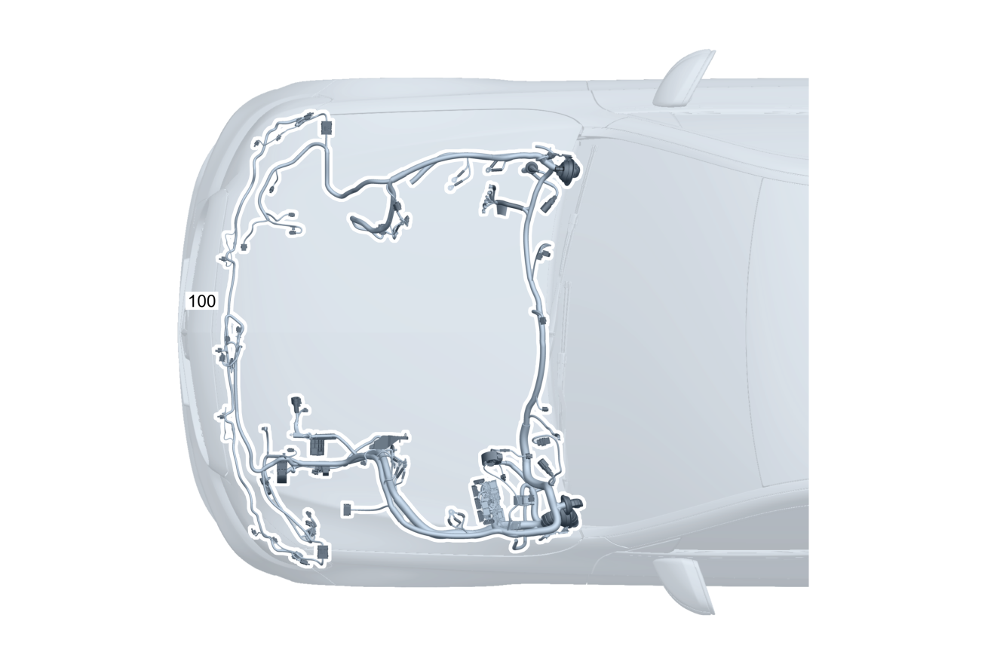

| № | Артикул | Название | Кол. | Примечание | Ограничение |
|---|---|---|---|---|---|
| 100 | A 205 540 13 12 | Электрический жгут (ELECTRICAL WIRING HARNESS) | 1 | Жгут электропроводки двигателя на кузове [001660] В ЖГУТЕ ЭЛЕКТРОПРОВОДКИ ИМЕЮТСЯ СООТВЕТСТВ. СПЕЦ.ИСПОЛНЕНИЯ СОГЛАСНО ЗАВОДСКОМУ НОМЕРУ АВТОМОБИЛЯ [622] ПРИ ЗАКАЗЕ УКАЗАТЬ ИДЕНТ.№ | |
| 120 | Q 000000000002 | - Возможен заказ только отдельных компонентов жгута проводов | 1 | Стартер Рулевое управление: Влево | 809 |
| 120 | Q 000000000002 | - Возможен заказ только отдельных компонентов жгута проводов | 1 | Стартер Рулевое управление: Влево | |
| 120 | Q 000000000002 | - Возможен заказ только отдельных компонентов жгута проводов | 1 | Стартер Рулевое управление: Вправо | 809 |
| 120 | Q 000000000002 | - Возможен заказ только отдельных компонентов жгута проводов | 1 | Стартер Рулевое управление: Вправо | |
| 120 | Q 000000000002 | - Возможен заказ только отдельных компонентов жгута проводов | 1 | Датчик концентрации вредных веществ Рулевое управление: Влево | 581/830+198 |
| 120 | Q 000000000002 | - Возможен заказ только отдельных компонентов жгута проводов | 1 | Датчик концентрации вредных веществ Рулевое управление: Влево | 800+(581/830) |
| 120 | Q 000000000002 | - Возможен заказ только отдельных компонентов жгута проводов | 1 | Датчик концентрации вредных веществ Рулевое управление: Влево | 581/830 |
| 120 | Q 000000000002 | - Возможен заказ только отдельных компонентов жгута проводов | 1 | Стеклоочиститель Рулевое управление: Влево | |
| 120 | Q 000000000002 | - Возможен заказ только отдельных компонентов жгута проводов | 1 | Стеклоочиститель Рулевое управление: Вправо | |
| 120 | Q 000000000002 | - Возможен заказ только отдельных компонентов жгута проводов | 1 | Стеклоочиститель Рулевое управление: Влево | 807+057/808 |
| 120 | Q 000000000002 | - Возможен заказ только отдельных компонентов жгута проводов | 1 | Стеклоочиститель Рулевое управление: Влево | |
| 120 | Q 000000000002 | - Возможен заказ только отдельных компонентов жгута проводов | 1 | Стеклоочиститель Рулевое управление: Вправо | 807+057/808 |
| 120 | Q 000000000002 | - Возможен заказ только отдельных компонентов жгута проводов | 1 | Стеклоочиститель Рулевое управление: Вправо | |
| 120 | Q 000000000002 | - Возможен заказ только отдельных компонентов жгута проводов | 1 | Стеклоочиститель Рулевое управление: Влево | 809 |
| 120 | Q 000000000002 | - Возможен заказ только отдельных компонентов жгута проводов | 1 | Стеклоочиститель Рулевое управление: Влево | |
| 120 | Q 000000000002 | - Возможен заказ только отдельных компонентов жгута проводов | 1 | Стеклоочиститель Рулевое управление: Вправо | 809 |
| 120 | Q 000000000002 | - Возможен заказ только отдельных компонентов жгута проводов | 1 | Стеклоочиститель Рулевое управление: Вправо | |
| 120 | Q 000000000002 | - Возможен заказ только отдельных компонентов жгута проводов | 1 | Пневмоподвеска Рулевое управление: Влево | 483/489 |
| 120 | Q 000000000002 | - Возможен заказ только отдельных компонентов жгута проводов | 1 | Пневмоподвеска Рулевое управление: Вправо | 483/489 |
| 120 | Q 000000000002 | - Возможен заказ только отдельных компонентов жгута проводов | 1 | Пневмоподвеска Рулевое управление: Влево | (807+057/808)+(483/489) |
| 120 | Q 000000000002 | - Возможен заказ только отдельных компонентов жгута проводов | 1 | Пневмоподвеска Рулевое управление: Влево | 483/489 |
| 120 | Q 000000000002 | - Возможен заказ только отдельных компонентов жгута проводов | 1 | Пневмоподвеска Рулевое управление: Вправо | (807+057/808)+(483/489) |
| 120 | Q 000000000002 | - Возможен заказ только отдельных компонентов жгута проводов | 1 | Пневмоподвеска Рулевое управление: Вправо | 483/489 |
| 120 | Q 000000000002 | - Возможен заказ только отдельных компонентов жгута проводов | 1 | Пневмоподвеска Рулевое управление: Влево | 809+(483/489) |
| 120 | Q 000000000002 | - Возможен заказ только отдельных компонентов жгута проводов | 1 | Пневмоподвеска Рулевое управление: Влево | 483/489 |
| 120 | Q 000000000002 | - Возможен заказ только отдельных компонентов жгута проводов | 1 | Пневмоподвеска Рулевое управление: Вправо | 809+(483/489) |
| 120 | Q 000000000002 | - Возможен заказ только отдельных компонентов жгута проводов | 1 | Пневмоподвеска Рулевое управление: Вправо | 483/489 |
| 120 | Q 000000000002 | - Возможен заказ только отдельных компонентов жгута проводов | 1 | Датчик температуры наружного воздуха Рулевое управление: Влево | 809 |
| 120 | Q 000000000002 | - Возможен заказ только отдельных компонентов жгута проводов | 1 | Датчик температуры наружного воздуха Рулевое управление: Влево | |
| 120 | Q 000000000002 | - Возможен заказ только отдельных компонентов жгута проводов | 1 | Датчик температуры наружного воздуха Рулевое управление: Вправо | 809 |
| 120 | Q 000000000002 | - Возможен заказ только отдельных компонентов жгута проводов | 1 | Датчик температуры наружного воздуха Рулевое управление: Вправо | |
| 120 | Q 000000000002 | - Возможен заказ только отдельных компонентов жгута проводов | 1 | Датчик температуры охлаждающей жидкости низкотемпературной системы охлаждения Рулевое управление: Влево | |
| 120 | Q 000000000002 | - Возможен заказ только отдельных компонентов жгута проводов | 1 | Датчик температуры охлаждающей жидкости низкотемпературной системы охлаждения Рулевое управление: Вправо | |
| 120 | Q 000000000002 | - Возможен заказ только отдельных компонентов жгута проводов | 1 | Модуль предохранителей и реле моторного отсека Рулевое управление: Влево | 809 |
| 120 | Q 000000000002 | - Возможен заказ только отдельных компонентов жгута проводов | 1 | Модуль предохранителей и реле моторного отсека Рулевое управление: Влево | |
| 120 | Q 000000000002 | - Возможен заказ только отдельных компонентов жгута проводов | 1 | Модуль предохранителей и реле моторного отсека Рулевое управление: Вправо | 809 |
| 120 | Q 000000000002 | - Возможен заказ только отдельных компонентов жгута проводов | 1 | Модуль предохранителей и реле моторного отсека Рулевое управление: Вправо | |
| 120 | Q 000000000002 | - Возможен заказ только отдельных компонентов жгута проводов | 1 | Электропитание вентилятора Рулевое управление: Влево | 809 |
| 120 | Q 000000000002 | - Возможен заказ только отдельных компонентов жгута проводов | 1 | Электропитание вентилятора Рулевое управление: Влево | |
| 120 | Q 000000000002 | - Возможен заказ только отдельных компонентов жгута проводов | 1 | Электропитание вентилятора Рулевое управление: Вправо | 809 |
| 120 | Q 000000000002 | - Возможен заказ только отдельных компонентов жгута проводов | 1 | Электропитание вентилятора Рулевое управление: Вправо | |
| 120 | Q 000000000002 | - Возможен заказ только отдельных компонентов жгута проводов | 1 | Функция закрывания облицовки радиатора Рулевое управление: Влево | 2U1 |
| 120 | Q 000000000002 | - Возможен заказ только отдельных компонентов жгута проводов | 1 | Функция закрывания облицовки радиатора Рулевое управление: Вправо | 2U1 |
| 120 | Q 000000000002 | - Возможен заказ только отдельных компонентов жгута проводов | 1 | Функция закрывания облицовки радиатора Рулевое управление: Влево | 809+2U1 |
| 120 | Q 000000000002 | - Возможен заказ только отдельных компонентов жгута проводов | 1 | Функция закрывания облицовки радиатора Рулевое управление: Влево | 2U1 |
| 120 | Q 000000000002 | - Возможен заказ только отдельных компонентов жгута проводов | 1 | Функция закрывания облицовки радиатора Рулевое управление: Вправо | 809+2U1 |
| 120 | Q 000000000002 | - Возможен заказ только отдельных компонентов жгута проводов | 1 | Функция закрывания облицовки радиатора Рулевое управление: Вправо | 2U1 |
| 120 | Q 000000000002 | - Возможен заказ только отдельных компонентов жгута проводов | 1 | Исполнительный электродвигатель жалюзи радиатора Рулевое управление: Влево | |
| 120 | Q 000000000002 | - Возможен заказ только отдельных компонентов жгута проводов | 1 | Исполнительный электродвигатель жалюзи радиатора Рулевое управление: Вправо | |
| 120 | Q 000000000002 | - Возможен заказ только отдельных компонентов жгута проводов | 1 | Исполнительный электродвигатель жалюзи радиатора Рулевое управление: Влево | 809 |
| 120 | Q 000000000002 | - Возможен заказ только отдельных компонентов жгута проводов | 1 | Исполнительный электродвигатель жалюзи радиатора Рулевое управление: Влево | |
| 120 | Q 000000000002 | - Возможен заказ только отдельных компонентов жгута проводов | 1 | Исполнительный электродвигатель жалюзи радиатора Рулевое управление: Вправо | 809 |
| 120 | Q 000000000002 | - Возможен заказ только отдельных компонентов жгута проводов | 1 | Исполнительный электродвигатель жалюзи радиатора Рулевое управление: Вправо | |
| 120 | Q 000000000002 | - Возможен заказ только отдельных компонентов жгута проводов | 1 | Электронасос системы охлаждения Рулевое управление: Влево | |
| 120 | Q 000000000002 | - Возможен заказ только отдельных компонентов жгута проводов | 1 | Электронасос системы охлаждения Рулевое управление: Вправо | |
| 120 | Q 000000000002 | - Возможен заказ только отдельных компонентов жгута проводов | 1 | Электронасос системы охлаждения Рулевое управление: Влево | 807+057/808 |
| 120 | Q 000000000002 | - Возможен заказ только отдельных компонентов жгута проводов | 1 | Электронасос системы охлаждения Рулевое управление: Влево | |
| 120 | Q 000000000002 | - Возможен заказ только отдельных компонентов жгута проводов | 1 | Электронасос системы охлаждения Рулевое управление: Вправо | 807+057/808 |
| 120 | Q 000000000002 | - Возможен заказ только отдельных компонентов жгута проводов | 1 | Электронасос системы охлаждения Рулевое управление: Вправо | |
| 120 | Q 000000000002 | - Возможен заказ только отдельных компонентов жгута проводов | 1 | Электронасос системы охлаждения Рулевое управление: Влево | 809 |
| 120 | Q 000000000002 | - Возможен заказ только отдельных компонентов жгута проводов | 1 | Электронасос системы охлаждения Рулевое управление: Влево | |
| 120 | Q 000000000002 | - Возможен заказ только отдельных компонентов жгута проводов | 1 | Электронасос системы охлаждения Рулевое управление: Вправо | 809 |
| 120 | Q 000000000002 | - Возможен заказ только отдельных компонентов жгута проводов | 1 | Электронасос системы охлаждения Рулевое управление: Вправо | |
| 120 | Q 000000000002 | - Возможен заказ только отдельных компонентов жгута проводов | 1 | Переходный жгут проводов 48 В циркуляционного насоса Рулевое управление: Влево | 809+B01 |
| 120 | Q 000000000002 | - Возможен заказ только отдельных компонентов жгута проводов | 1 | Переходный жгут проводов 48 В циркуляционного насоса Рулевое управление: Влево | B01 |
| 120 | Q 000000000002 | - Возможен заказ только отдельных компонентов жгута проводов | 1 | Переходный жгут проводов 48 В циркуляционного насоса Рулевое управление: Вправо | 809+B01 |
| 120 | Q 000000000002 | - Возможен заказ только отдельных компонентов жгута проводов | 1 | Переходный жгут проводов 48 В циркуляционного насоса Рулевое управление: Вправо | B01 |
| 120 | Q 000000000002 | - Возможен заказ только отдельных компонентов жгута проводов | 1 | Масляный насос Рулевое управление: Влево | 427 |
| 120 | Q 000000000002 | - Возможен заказ только отдельных компонентов жгута проводов | 1 | Масляный насос Рулевое управление: Вправо | 427 |
| 120 | Q 000000000002 | - Возможен заказ только отдельных компонентов жгута проводов | 1 | Масляный насос Рулевое управление: Влево | (807+057/808)+427 |
| 120 | Q 000000000002 | - Возможен заказ только отдельных компонентов жгута проводов | 1 | Масляный насос Рулевое управление: Влево | 427 |
| 120 | Q 000000000002 | - Возможен заказ только отдельных компонентов жгута проводов | 1 | Масляный насос Рулевое управление: Вправо | (807+057/808)+427 |
| 120 | Q 000000000002 | - Возможен заказ только отдельных компонентов жгута проводов | 1 | Масляный насос Рулевое управление: Вправо | 427 |
| 120 | Q 000000000002 | - Возможен заказ только отдельных компонентов жгута проводов | 1 | Система контроля уровня охлаждающей жидкости Рулевое управление: Влево | |
| 120 | Q 000000000002 | - Возможен заказ только отдельных компонентов жгута проводов | 1 | Система контроля уровня охлаждающей жидкости Рулевое управление: Вправо | |
| 120 | Q 000000000002 | - Возможен заказ только отдельных компонентов жгута проводов | 1 | Система контроля уровня охлаждающей жидкости Рулевое управление: Влево | 809 |
| 120 | Q 000000000002 | - Возможен заказ только отдельных компонентов жгута проводов | 1 | Система контроля уровня охлаждающей жидкости Рулевое управление: Влево | |
| 120 | Q 000000000002 | - Возможен заказ только отдельных компонентов жгута проводов | 1 | Система контроля уровня охлаждающей жидкости Рулевое управление: Вправо | 809 |
| 120 | Q 000000000002 | - Возможен заказ только отдельных компонентов жгута проводов | 1 | Система контроля уровня охлаждающей жидкости Рулевое управление: Вправо | |
| 120 | Q 000000000002 | - Возможен заказ только отдельных компонентов жгута проводов | 1 | Циркуляционный насос Рулевое управление: Вправо | 670/824/875/U77/M276 |
| 120 | Q 000000000002 | - Возможен заказ только отдельных компонентов жгута проводов | 1 | Циркуляционный насос Рулевое управление: Влево | (807+057/808)+(228/670/824/875/U77/M276) |
| 120 | Q 000000000002 | - Возможен заказ только отдельных компонентов жгута проводов | 1 | Циркуляционный насос Рулевое управление: Влево | 228/670/824/875/U77/M276 |
| 120 | Q 000000000002 | - Возможен заказ только отдельных компонентов жгута проводов | 1 | Циркуляционный насос Рулевое управление: Вправо | (807+057/808)+(670/824/875/U77/M276) |
| 120 | Q 000000000002 | - Возможен заказ только отдельных компонентов жгута проводов | 1 | Циркуляционный насос Рулевое управление: Вправо | 670/824/875/U77/M276 |
| 120 | Q 000000000002 | - Возможен заказ только отдельных компонентов жгута проводов | 1 | Циркуляционный насос Рулевое управление: Влево | 809+(581/824/228/ME06/ME05/ME04/670/M276/M177/U77/U79/875) |
| 120 | Q 000000000002 | - Возможен заказ только отдельных компонентов жгута проводов | 1 | Циркуляционный насос Рулевое управление: Влево | 809+(581/824/228/ME06/ME05/ME04/670/M276/M177/U79/875) |
| 120 | Q 000000000002 | - Возможен заказ только отдельных компонентов жгута проводов | 1 | Циркуляционный насос Рулевое управление: Влево | (581/824/228/ME05/670/M276/M177/U79/875) |
| 120 | Q 000000000002 | - Возможен заказ только отдельных компонентов жгута проводов | 1 | Циркуляционный насос Рулевое управление: Влево | (581/824/228/ME05/670/M276/M177/U79/875/M654) |
| 120 | Q 000000000002 | - Возможен заказ только отдельных компонентов жгута проводов | 1 | Циркуляционный насос Рулевое управление: Вправо | 809+(581/824/228/ME06/ME05/ME04/670/M276/M177/U77/U79/875) |
| 120 | Q 000000000002 | - Возможен заказ только отдельных компонентов жгута проводов | 1 | Циркуляционный насос Рулевое управление: Вправо | 809+(581/824/228/ME06/ME05/ME04/670/M276/M177/U79/875) |
| 120 | Q 000000000002 | - Возможен заказ только отдельных компонентов жгута проводов | 1 | Циркуляционный насос Рулевое управление: Вправо | (581/824/228/ME05/670/M276/M177/U79/875) |
| 120 | Q 000000000002 | - Возможен заказ только отдельных компонентов жгута проводов | 1 | Циркуляционный насос Рулевое управление: Вправо | (581/824/228/ME05/670/M276/M177/U79/875/M654) |
| 120 | Q 000000000002 | - Возможен заказ только отдельных компонентов жгута проводов | 1 | Модуль предохранителей и реле моторного отсека Рулевое управление: Влево | M274/M276/M626 |
| 120 | Q 000000000002 | - Возможен заказ только отдельных компонентов жгута проводов | 1 | Модуль предохранителей и реле моторного отсека Рулевое управление: Вправо | M274/M276/M626 |
| 120 | Q 000000000002 | - Возможен заказ только отдельных компонентов жгута проводов | 1 | Модуль предохранителей и реле моторного отсека Рулевое управление: Влево | (807+057/808)+(M274/M276/M626) |
| 120 | Q 000000000002 | - Возможен заказ только отдельных компонентов жгута проводов | 1 | Модуль предохранителей и реле моторного отсека Рулевое управление: Влево | M274/M276/M626 |
| 120 | Q 000000000002 | - Возможен заказ только отдельных компонентов жгута проводов | 1 | Модуль предохранителей и реле моторного отсека Рулевое управление: Вправо | (807+057/808)+(M274/M276/M626) |
| 120 | Q 000000000002 | - Возможен заказ только отдельных компонентов жгута проводов | 1 | Модуль предохранителей и реле моторного отсека Рулевое управление: Вправо | M274/M276/M626 |
| 120 | Q 000000000002 | - Возможен заказ только отдельных компонентов жгута проводов | 1 | Электрический предохранитель | |
| 120 | Q 000000000002 | - Возможен заказ только отдельных компонентов жгута проводов | 1 | Стартер | 809 |
| 120 | Q 000000000002 | - Возможен заказ только отдельных компонентов жгута проводов | 1 | Стартер | |
| 120 | Q 000000000002 | - Возможен заказ только отдельных компонентов жгута проводов | 1 | Пневмобаллон подвески | 483/488/489/ME04/ME05/ME06 |
| 120 | Q 000000000002 | - Возможен заказ только отдельных компонентов жгута проводов | 1 | Пневмобаллон подвески | 483/489/ME04/ME05/ME06/(488+M276+M016) |
| 120 | Q 000000000002 | - Возможен заказ только отдельных компонентов жгута проводов | 1 | Пневмобаллон подвески | 483/489/ME04/ME05/ME06 |
| 120 | Q 000000000002 | - Возможен заказ только отдельных компонентов жгута проводов | 1 | Пневмобаллон подвески | 483/489/ME04/ME06 |
| 120 | Q 000000000002 | - Возможен заказ только отдельных компонентов жгута проводов | 1 | Пневмобаллон подвески | 483/489 |
| 120 | Q 000000000002 | - Возможен заказ только отдельных компонентов жгута проводов | 1 | Насос омывателя Рулевое управление: Влево | |
| 120 | Q 000000000002 | - Возможен заказ только отдельных компонентов жгута проводов | 1 | Насос омывателя Рулевое управление: Вправо | |
| 120 | Q 000000000002 | - Возможен заказ только отдельных компонентов жгута проводов | 1 | Насос охлаждающей жидкости Рулевое управление: Влево | |
| 120 | Q 000000000002 | - Возможен заказ только отдельных компонентов жгута проводов | 1 | Насос охлаждающей жидкости Рулевое управление: Вправо | |
| 120 | Q 000000000002 | - Возможен заказ только отдельных компонентов жгута проводов | 1 | Кабель\-адаптер 48V Рулевое управление: Влево | 809+B01 |
| 120 | Q 000000000002 | - Возможен заказ только отдельных компонентов жгута проводов | 1 | Блок силовых предохранителей Рулевое управление: Влево | 809+B01 |
| 120 | Q 000000000002 | - Возможен заказ только отдельных компонентов жгута проводов | 1 | Блок силовых предохранителей Рулевое управление: Влево | B01 |
| 120 | Q 000000000002 | - Возможен заказ только отдельных компонентов жгута проводов | 1 | Пневмоподвеска Рулевое управление: Влево | (807+057/808)+(489/ME04/ME06) |
| 120 | Q 000000000002 | - Возможен заказ только отдельных компонентов жгута проводов | 1 | Пневмоподвеска Рулевое управление: Влево | (489/ME04/ME06) |
| 120 | Q 000000000002 | - Возможен заказ только отдельных компонентов жгута проводов | 1 | Пневмоподвеска Рулевое управление: Вправо | (807+057/808)+(489/ME04/ME06) |
| 120 | Q 000000000002 | - Возможен заказ только отдельных компонентов жгута проводов | 1 | Пневмоподвеска Рулевое управление: Вправо | (489/ME04/ME06) |
| 120 | Q 000000000002 | - Возможен заказ только отдельных компонентов жгута проводов | 1 | Система омывателя ветрового стекла Рулевое управление: Влево | 875 |
| 120 | Q 000000000002 | - Возможен заказ только отдельных компонентов жгута проводов | 1 | Система омывателя ветрового стекла Рулевое управление: Вправо | 875 |
| 120 | Q 000000000002 | - Возможен заказ только отдельных компонентов жгута проводов | 1 | Система омывателя ветрового стекла Рулевое управление: Влево | (807+057/808)+875 |
| 120 | Q 000000000002 | - Возможен заказ только отдельных компонентов жгута проводов | 1 | Система омывателя ветрового стекла Рулевое управление: Влево | 875 |
| 120 | Q 000000000002 | - Возможен заказ только отдельных компонентов жгута проводов | 1 | Система омывателя ветрового стекла Рулевое управление: Вправо | (807+057/808)+875 |
| 120 | Q 000000000002 | - Возможен заказ только отдельных компонентов жгута проводов | 1 | Система омывателя ветрового стекла Рулевое управление: Вправо | 875 |
| 120 | Q 000000000002 | - Возможен заказ только отдельных компонентов жгута проводов | 1 | Система омывателя ветрового стекла Рулевое управление: Влево | 809+875 |
| 120 | Q 000000000002 | - Возможен заказ только отдельных компонентов жгута проводов | 1 | Система омывателя ветрового стекла Рулевое управление: Влево | 875 |
| 120 | Q 000000000002 | - Возможен заказ только отдельных компонентов жгута проводов | 1 | Система омывателя ветрового стекла Рулевое управление: Вправо | 809+875 |
| 120 | Q 000000000002 | - Возможен заказ только отдельных компонентов жгута проводов | 1 | Система омывателя ветрового стекла Рулевое управление: Вправо | 875 |
| 120 | Q 000000000002 | - Возможен заказ только отдельных компонентов жгута проводов | 1 | Галогенный световой прибор Рулевое управление: Влево | |
| 120 | Q 000000000002 | - Возможен заказ только отдельных компонентов жгута проводов | 1 | Галогенный световой прибор Рулевое управление: Вправо | |
| 120 | Q 000000000002 | - Возможен заказ только отдельных компонентов жгута проводов | 1 | Галогенный световой прибор Рулевое управление: Влево | 807+057/808 |
| 120 | Q 000000000002 | - Возможен заказ только отдельных компонентов жгута проводов | 1 | Галогенный световой прибор Рулевое управление: Влево | |
| 120 | Q 000000000002 | - Возможен заказ только отдельных компонентов жгута проводов | 1 | Галогенный световой прибор Рулевое управление: Вправо | 807+057/808 |
| 120 | Q 000000000002 | - Возможен заказ только отдельных компонентов жгута проводов | 1 | Галогенный световой прибор Рулевое управление: Вправо | |
| 120 | Q 000000000002 | - Возможен заказ только отдельных компонентов жгута проводов | 1 | Галогенный световой прибор Рулевое управление: Влево | 809 |
| 120 | Q 000000000002 | - Возможен заказ только отдельных компонентов жгута проводов | 1 | Галогенный световой прибор Рулевое управление: Влево | |
| 120 | Q 000000000002 | - Возможен заказ только отдельных компонентов жгута проводов | 1 | Галогенный световой прибор Рулевое управление: Вправо | 809 |
| 120 | Q 000000000002 | - Возможен заказ только отдельных компонентов жгута проводов | 1 | Галогенный световой прибор Рулевое управление: Вправо | |
| 120 | Q 000000000002 | - Возможен заказ только отдельных компонентов жгута проводов | 1 | Система регулировки угла наклона фар Рулевое управление: Влево | |
| 120 | Q 000000000002 | - Возможен заказ только отдельных компонентов жгута проводов | 1 | Система регулировки угла наклона фар Рулевое управление: Вправо | |
| 120 | Q 000000000002 | - Возможен заказ только отдельных компонентов жгута проводов | 1 | Система регулировки угла наклона фар Рулевое управление: Влево | 807+057/808 |
| 120 | Q 000000000002 | - Возможен заказ только отдельных компонентов жгута проводов | 1 | Система регулировки угла наклона фар Рулевое управление: Влево | |
| 120 | Q 000000000002 | - Возможен заказ только отдельных компонентов жгута проводов | 1 | Система регулировки угла наклона фар Рулевое управление: Вправо | 807+057/808 |
| 120 | Q 000000000002 | - Возможен заказ только отдельных компонентов жгута проводов | 1 | Система регулировки угла наклона фар Рулевое управление: Вправо | |
| 120 | Q 000000000002 | - Возможен заказ только отдельных компонентов жгута проводов | 1 | Система регулировки угла наклона фар Рулевое управление: Влево | 809 |
| 120 | Q 000000000002 | - Возможен заказ только отдельных компонентов жгута проводов | 1 | Система регулировки угла наклона фар Рулевое управление: Влево | |
| 120 | Q 000000000002 | - Возможен заказ только отдельных компонентов жгута проводов | 1 | Система регулировки угла наклона фар Рулевое управление: Вправо | 809 |
| 120 | Q 000000000002 | - Возможен заказ только отдельных компонентов жгута проводов | 1 | Система регулировки угла наклона фар Рулевое управление: Вправо | |
| 120 | Q 000000000002 | - Возможен заказ только отдельных компонентов жгута проводов | 1 | Боковой габаритный фонарь Рулевое управление: Влево | 460/494 |
| 120 | Q 000000000002 | - Возможен заказ только отдельных компонентов жгута проводов | 1 | Боковой габаритный фонарь Рулевое управление: Влево | (460/494)+632 |
| 120 | Q 000000000002 | - Возможен заказ только отдельных компонентов жгута проводов | 1 | Боковой габаритный фонарь Рулевое управление: Влево | 809+(460/494) |
| 120 | Q 000000000002 | - Возможен заказ только отдельных компонентов жгута проводов | 1 | Боковой габаритный фонарь Рулевое управление: Влево | 460/494 |
| 120 | Q 000000000002 | - Возможен заказ только отдельных компонентов жгута проводов | 1 | Статический светодиодный свет Рулевое управление: Влево | 631/632 |
| 120 | Q 000000000002 | - Возможен заказ только отдельных компонентов жгута проводов | 1 | Статический светодиодный свет Рулевое управление: Вправо | 631/632 |
| 120 | Q 000000000002 | - Возможен заказ только отдельных компонентов жгута проводов | 1 | Статический светодиодный свет Рулевое управление: Влево | (631/632)+(483/489/488) |
| 120 | Q 000000000002 | - Возможен заказ только отдельных компонентов жгута проводов | 1 | Статический светодиодный свет Рулевое управление: Вправо | (631/632)+(483/489/488) |
| 120 | Q 000000000002 | - Возможен заказ только отдельных компонентов жгута проводов | 1 | Статический светодиодный свет Рулевое управление: Влево | (807+057/808)+(631/632) |
| 120 | Q 000000000002 | - Возможен заказ только отдельных компонентов жгута проводов | 1 | Статический светодиодный свет Рулевое управление: Влево | 631/632 |
| 120 | Q 000000000002 | - Возможен заказ только отдельных компонентов жгута проводов | 1 | Статический светодиодный свет Рулевое управление: Вправо | (807+057/808)+(631/632) |
| 120 | Q 000000000002 | - Возможен заказ только отдельных компонентов жгута проводов | 1 | Статический светодиодный свет Рулевое управление: Вправо | 631/632 |
| 120 | Q 000000000002 | - Возможен заказ только отдельных компонентов жгута проводов | 1 | Статический светодиодный свет Рулевое управление: Влево | (807+057/808)+(631/632)+(483/489/488) |
| 120 | Q 000000000002 | - Возможен заказ только отдельных компонентов жгута проводов | 1 | Статический светодиодный свет Рулевое управление: Влево | (631/632)+(483/489/488) |
| 120 | Q 000000000002 | - Возможен заказ только отдельных компонентов жгута проводов | 1 | Статический светодиодный свет Рулевое управление: Вправо | (807+057/808)+(631/632)+(483/489/488) |
| 120 | Q 000000000002 | - Возможен заказ только отдельных компонентов жгута проводов | 1 | Статический светодиодный свет Рулевое управление: Вправо | (631/632)+(483/489/488) |
| 120 | Q 000000000002 | - Возможен заказ только отдельных компонентов жгута проводов | 1 | Статический светодиодный свет Рулевое управление: Влево | 809+(631/632) |
| 120 | Q 000000000002 | - Возможен заказ только отдельных компонентов жгута проводов | 1 | Статический светодиодный свет Рулевое управление: Влево | (631/632) |
| 120 | Q 000000000002 | - Возможен заказ только отдельных компонентов жгута проводов | 1 | Статический светодиодный свет Рулевое управление: Вправо | 809+(631/632) |
| 120 | Q 000000000002 | - Возможен заказ только отдельных компонентов жгута проводов | 1 | Статический светодиодный свет Рулевое управление: Вправо | (631/632) |
| 120 | Q 000000000002 | - Возможен заказ только отдельных компонентов жгута проводов | 1 | Модуль динамического светодиодного освещения Рулевое управление: Влево | 640/641/642 |
| 120 | Q 000000000002 | - Возможен заказ только отдельных компонентов жгута проводов | 1 | Модуль динамического светодиодного освещения Рулевое управление: Вправо | 641/642 |
| 120 | Q 000000000002 | - Возможен заказ только отдельных компонентов жгута проводов | 1 | Модуль динамического светодиодного освещения Рулевое управление: Влево | (640/641/642)+(483/489/488) |
| 120 | Q 000000000002 | - Возможен заказ только отдельных компонентов жгута проводов | 1 | Модуль динамического светодиодного освещения Рулевое управление: Вправо | (641/642)+(483/489/488) |
| 120 | Q 000000000002 | - Возможен заказ только отдельных компонентов жгута проводов | 1 | Модуль динамического светодиодного освещения Рулевое управление: Влево | (807+057/808)+(640/641/642) |
| 120 | Q 000000000002 | - Возможен заказ только отдельных компонентов жгута проводов | 1 | Модуль динамического светодиодного освещения Рулевое управление: Влево | 640/641/642 |
| 120 | Q 000000000002 | - Возможен заказ только отдельных компонентов жгута проводов | 1 | Модуль динамического светодиодного освещения Рулевое управление: Вправо | (807+057/808)+(641/642) |
| 120 | Q 000000000002 | - Возможен заказ только отдельных компонентов жгута проводов | 1 | Модуль динамического светодиодного освещения Рулевое управление: Вправо | 641/642 |
| 120 | Q 000000000002 | - Возможен заказ только отдельных компонентов жгута проводов | 1 | Модуль динамического светодиодного освещения Рулевое управление: Влево | (807+057/808)+(640/641/642)+(483/489/488) |
| 120 | Q 000000000002 | - Возможен заказ только отдельных компонентов жгута проводов | 1 | Модуль динамического светодиодного освещения Рулевое управление: Влево | (640/641/642)+(483/489/488) |
| 120 | Q 000000000002 | - Возможен заказ только отдельных компонентов жгута проводов | 1 | Модуль динамического светодиодного освещения Рулевое управление: Вправо | (807+057/808)+(641/642)+(483/489/488) |
| 120 | Q 000000000002 | - Возможен заказ только отдельных компонентов жгута проводов | 1 | Модуль динамического светодиодного освещения Рулевое управление: Вправо | (641/642)+(483/489/488) |
| 120 | Q 000000000002 | - Возможен заказ только отдельных компонентов жгута проводов | 1 | Поворотный переключатель освещения Рулевое управление: Влево | 631/632/640/641/642 |
| 120 | Q 000000000002 | - Возможен заказ только отдельных компонентов жгута проводов | 1 | Поворотный переключатель освещения Рулевое управление: Вправо | 631/632/641/642 |
| 120 | Q 000000000002 | - Возможен заказ только отдельных компонентов жгута проводов | 1 | Поворотный переключатель освещения Рулевое управление: Влево | 809+(631/632/640/641/642) |
| 120 | Q 000000000002 | - Возможен заказ только отдельных компонентов жгута проводов | 1 | Поворотный переключатель освещения Рулевое управление: Влево | (631/632/640/641/642) |
| 120 | Q 000000000002 | - Возможен заказ только отдельных компонентов жгута проводов | 1 | Поворотный переключатель освещения Рулевое управление: Вправо | 809+(631/632/641/642) |
| 120 | Q 000000000002 | - Возможен заказ только отдельных компонентов жгута проводов | 1 | Поворотный переключатель освещения Рулевое управление: Вправо | (631/632/641/642) |
| 120 | Q 000000000002 | - Возможен заказ только отдельных компонентов жгута проводов | 1 | Датчик уровня кузова Рулевое управление: Влево | 640/641/642 |
| 120 | Q 000000000002 | - Возможен заказ только отдельных компонентов жгута проводов | 1 | Датчик уровня кузова Рулевое управление: Вправо | 641/642 |
| 120 | Q 000000000002 | - Возможен заказ только отдельных компонентов жгута проводов | 1 | Датчик уровня кузова Рулевое управление: Влево | 631/632 |
| 120 | Q 000000000002 | - Возможен заказ только отдельных компонентов жгута проводов | 1 | Датчик уровня кузова Рулевое управление: Вправо | 631/632 |
| 120 | Q 000000000002 | - Возможен заказ только отдельных компонентов жгута проводов | 1 | Преобразователь напряжения Рулевое управление: Влево | 809+421/809+M177+M40+427 |
| 120 | Q 000000000002 | - Возможен заказ только отдельных компонентов жгута проводов | 1 | Преобразователь напряжения Рулевое управление: Влево | 421 |
| 120 | Q 000000000002 | - Возможен заказ только отдельных компонентов жгута проводов | 1 | Преобразователь напряжения Рулевое управление: Вправо | 809+421/809+M177+M40+427 |
| 120 | Q 000000000002 | - Возможен заказ только отдельных компонентов жгута проводов | 1 | Преобразователь напряжения Рулевое управление: Вправо | 421 |
| 140 | A 205 540 39 29 | - Электрический жгут (ELECTRICAL WIRING HARNESS) | 1 | Жгут электропроводки двигателя со стороны кузова, базовый объем Рулевое управление: Влево | M274/M276 |
| 140 | A 205 540 40 29 | - Электрический жгут (ELECTRICAL WIRING HARNESS) | 1 | Жгут электропроводки двигателя со стороны кузова, базовый объем Рулевое управление: Вправо | M274/M276 |
| 140 | A 205 540 68 39 | - Электрический жгут (ELECTRICAL WIRING HARNESS) | 1 | Жгут электропроводки двигателя со стороны кузова, базовый объем Рулевое управление: Влево | 807+(M626/M651) |
| 140 | Q 000000000002 | - Возможен заказ только отдельных компонентов жгута проводов | 1 | Жгут электропроводки двигателя со стороны кузова, базовый объем Рулевое управление: Вправо | 807+(M626/M651) |
| 140 | A 205 540 66 39 | - Электрический жгут (ELECTRICAL WIRING HARNESS) | 1 | Жгут электропроводки двигателя со стороны кузова, базовый объем Рулевое управление: Влево | 807+(M274/M276) |
| 140 | A 205 540 66 39 | - Электрический жгут (ELECTRICAL WIRING HARNESS) | 1 | Жгут электропроводки двигателя со стороны кузова, базовый объем Рулевое управление: Влево | M274/M276 |
| 140 | Q 000000000002 | - Возможен заказ только отдельных компонентов жгута проводов | 1 | Жгут электропроводки двигателя со стороны кузова, базовый объем Рулевое управление: Вправо | 807+(M274/M276) |
| 140 | Q 000000000002 | - Возможен заказ только отдельных компонентов жгута проводов | 1 | Жгут электропроводки двигателя со стороны кузова, базовый объем Рулевое управление: Вправо | M274/M276 |
| 140 | A 205 540 52 51 | - Электрический жгут (ELECTRICAL WIRING HARNESS) | 1 | Жгут электропроводки двигателя со стороны кузова, базовый объем Рулевое управление: Влево | (807+057/808)+(M626/M651) |
| 140 | A 205 540 53 51 | - Электрический жгут (ELECTRICAL WIRING HARNESS) | 1 | Жгут электропроводки двигателя со стороны кузова, базовый объем Рулевое управление: Вправо | (807+057/808)+(M626/M651) |
| 140 | A 205 540 50 51 | - Электрический жгут (ELECTRICAL WIRING HARNESS) | 1 | Жгут электропроводки двигателя со стороны кузова, базовый объем Рулевое управление: Влево | (807+057/808)+(M274/M276) |
| 140 | A 205 540 50 51 | - Электрический жгут (ELECTRICAL WIRING HARNESS) | 1 | Жгут электропроводки двигателя со стороны кузова, базовый объем Рулевое управление: Влево | M274/M276 |
| 140 | A 205 540 51 51 | - Электрический жгут (ELECTRICAL WIRING HARNESS) | 1 | Жгут электропроводки двигателя со стороны кузова, базовый объем Рулевое управление: Вправо | (807+057/808)+(M274/M276) |
| 140 | A 205 540 51 51 | - Электрический жгут (ELECTRICAL WIRING HARNESS) | 1 | Жгут электропроводки двигателя со стороны кузова, базовый объем Рулевое управление: Вправо | M274/M276 |
| 140 | A 205 540 21 52 | - Электрический жгут (ELECTRICAL WIRING HARNESS) | 1 | Жгут электропроводки двигателя со стороны кузова, базовый объем Рулевое управление: Влево | 809 |
| 140 | A 205 540 21 52 | - Электрический жгут (ELECTRICAL WIRING HARNESS) | 1 | Жгут электропроводки двигателя со стороны кузова, базовый объем Рулевое управление: Влево | |
| 140 | A 205 540 22 52 | - Электрический жгут (ELECTRICAL WIRING HARNESS) | 1 | Жгут электропроводки двигателя со стороны кузова, базовый объем Рулевое управление: Вправо | 809 |
| 140 | A 205 540 22 52 | - Электрический жгут (ELECTRICAL WIRING HARNESS) | 1 | Жгут электропроводки двигателя со стороны кузова, базовый объем Рулевое управление: Вправо | |
| 180 | A 205 540 37 16 | - Электрический жгут (ELECTRICAL WIRING HARNESS) | 1 | Пневмоподвеска Рулевое управление: Влево | 489/ME04/ME06 |
| 180 | A 205 540 82 50 | - Электрический жгут (ELECTRICAL WIRING HARNESS) | 1 | Пневмоподвеска Рулевое управление: Влево | 807+(489/ME04/ME06) |
| 180 | A 205 540 82 50 | - Электрический жгут (ELECTRICAL WIRING HARNESS) | 1 | Пневмоподвеска Рулевое управление: Влево | 489/ME04/ME06 |
| 180 | A 205 540 38 16 | - Электрический жгут (ELECTRICAL WIRING HARNESS) | 1 | Пневмоподвеска Рулевое управление: Вправо | 489/ME04/ME06 |
| 180 | A 205 540 83 50 | - Электрический жгут (ELECTRICAL WIRING HARNESS) | 1 | Пневмоподвеска Рулевое управление: Вправо | 489/ME04/ME06 |
| 200 | A 205 440 09 06 | - Электрический жгут (ELECTRICAL WIRING HARNESS) | 1 | Электроусилитель рулевого управления (EPS) Рулевое управление: Влево | M005 |
| 200 | A 205 440 61 06 | - Электрический жгут (ELECTRICAL WIRING HARNESS) | 1 | Электроусилитель рулевого управления (EPS) Рулевое управление: Вправо | M005 |
| 200 | A 205 540 80 55 | - Электрический жгут (ELECTRICAL WIRING HARNESS) | 1 | Электроусилитель рулевого управления (EPS) Рулевое управление: Влево | (807+057/808)+M005 |
| 200 | A 205 540 80 55 | - Электрический жгут (ELECTRICAL WIRING HARNESS) | 1 | Электроусилитель рулевого управления (EPS) Рулевое управление: Влево | M005 |
| 200 | Q 000000000002 | - Возможен заказ только отдельных компонентов жгута проводов | 1 | Электроусилитель рулевого управления (EPS) Рулевое управление: Вправо | (807+057/808)+M005 |
| 200 | Q 000000000002 | - Возможен заказ только отдельных компонентов жгута проводов | 1 | Электроусилитель рулевого управления (EPS) Рулевое управление: Вправо | M005 |
| 200 | Q 000000000002 | - Возможен заказ только отдельных компонентов жгута проводов | 1 | Электроусилитель рулевого управления (EPS) Рулевое управление: Влево | 809+M005 |
| 200 | A 205 540 93 95 | - Электрический жгут (ELECTRICAL WIRING HARNESS) | 1 | Электроусилитель рулевого управления (EPS) Рулевое управление: Влево | 809+M005 |
| 200 | A 205 540 93 95 | - Электрический жгут (ELECTRICAL WIRING HARNESS) | 1 | Электроусилитель рулевого управления (EPS) Рулевое управление: Влево | M005 |
| 200 | Q 000000000002 | - Возможен заказ только отдельных компонентов жгута проводов | 1 | Электроусилитель рулевого управления (EPS) Рулевое управление: Вправо | 809+M005 |
| 200 | A 205 540 94 95 | - Электрический жгут (ELECTRICAL WIRING HARNESS) | 1 | Электроусилитель рулевого управления (EPS) Рулевое управление: Вправо | 809+M005 |
| 200 | A 205 540 94 95 | - Электрический жгут (ELECTRICAL WIRING HARNESS) | 1 | Электроусилитель рулевого управления (EPS) Рулевое управление: Вправо | M005 |
| 240 | A 205 540 03 25 | - Электрический жгут (ELECTRICAL WIRING HARNESS) | 1 | Электропитание Рулевое управление: Влево | M651/M274+U98/M276 |
| 240 | A 205 540 72 20 | - Электрический жгут (ELECTRICAL WIRING HARNESS) | 1 | Электропитание Рулевое управление: Вправо | |
| 240 | A 205 540 65 22 | - Электрический жгут (ELECTRICAL WIRING HARNESS) | 1 | Электропитание Рулевое управление: Влево | 807+(M274/M276) |
| 240 | A 205 540 65 22 | - Электрический жгут (ELECTRICAL WIRING HARNESS) | 1 | Электропитание Рулевое управление: Влево | M274/M276 |
| 240 | A 205 540 03 25 | - Электрический жгут (ELECTRICAL WIRING HARNESS) | 1 | Электропитание Рулевое управление: Влево | 808+(M651/M626/M276/M274+U98) |
| 240 | A 205 540 03 25 | - Электрический жгут (ELECTRICAL WIRING HARNESS) | 1 | Электропитание Рулевое управление: Влево | M651/M626/M276/M274+U98 |
| 240 | A 205 540 03 25 | - Электрический жгут (ELECTRICAL WIRING HARNESS) | 1 | Электропитание Рулевое управление: Влево | 184/460/494 |
| 240 | A 205 540 04 25 | - Электрический жгут (ELECTRICAL WIRING HARNESS) | 1 | Электропитание K40/8 TO X25/7 Рулевое управление: Влево | |
| 240 | A 205 540 05 25 | - Электрический жгут (ELECTRICAL WIRING HARNESS) | 1 | Электропитание K40/8 TO X25/7 Рулевое управление: Вправо | |
| 240 | A 205 540 27 69 | - Электрический жгут | 1 | Электропитание Рулевое управление: Влево | 809 |
| 240 | A 205 540 23 92 | - Электрический жгут (ELECTRICAL WIRING HARNESS) | 1 | Электропитание Рулевое управление: Влево | 809 |
| 240 | A 205 540 23 92 | - Электрический жгут (ELECTRICAL WIRING HARNESS) | 1 | Электропитание Рулевое управление: Влево | |
| 240 | A 205 540 28 69 | - Электрический жгут (ELECTRICAL WIRING HARNESS) | 1 | Электропитание Рулевое управление: Вправо | 809 |
| 240 | A 205 540 28 69 | - Электрический жгут (ELECTRICAL WIRING HARNESS) | 1 | Электропитание Рулевое управление: Вправо | |
| 260 | A 205 540 84 83 | - Электрический жгут (ELECTRICAL WIRING HARNESS) | 1 | Выключатель, контакт капота Рулевое управление: Влево | 809 |
| 260 | A 205 540 84 83 | - Электрический жгут (ELECTRICAL WIRING HARNESS) | 1 | Выключатель, контакт капота Рулевое управление: Влево | |
| 260 | A 205 540 85 83 | - Электрический жгут (ELECTRICAL WIRING HARNESS) | 1 | Выключатель, контакт капота Рулевое управление: Вправо | 809 |
| 260 | A 205 540 85 83 | - Электрический жгут (ELECTRICAL WIRING HARNESS) | 1 | Выключатель, контакт капота Рулевое управление: Вправо | |
| 280 | A 205 440 36 06 | - Электрический жгут (ELECTRICAL WIRING HARNESS) | 1 | Электропитание вентилятора Рулевое управление: Влево | |
| 280 | A 205 440 37 06 | - Электрический жгут (ELECTRICAL WIRING HARNESS) | 1 | Электропитание вентилятора Рулевое управление: Вправо | |
| 280 | A 205 540 75 59 | - Электрический жгут (ELECTRICAL WIRING HARNESS) | 1 | Электропитание вентилятора Рулевое управление: Влево | 807+057/808 |
| 280 | A 205 540 75 59 | - Электрический жгут (ELECTRICAL WIRING HARNESS) | 1 | Электропитание вентилятора Рулевое управление: Влево | |
| 280 | A 205 540 76 59 | - Электрический жгут (ELECTRICAL WIRING HARNESS) | 1 | Электропитание вентилятора Рулевое управление: Вправо | 807+057/808 |
| 280 | A 205 540 76 59 | - Электрический жгут (ELECTRICAL WIRING HARNESS) | 1 | Электропитание вентилятора Рулевое управление: Вправо | |
| 300 | A 205 540 83 52 | - Электрический жгут (ELECTRICAL WIRING HARNESS) | 1 | Функция закрывания облицовки радиатора Рулевое управление: Влево | (807+057/808)+2U1 |
| 300 | A 205 540 83 52 | - Электрический жгут (ELECTRICAL WIRING HARNESS) | 1 | Функция закрывания облицовки радиатора Рулевое управление: Влево | 2U1 |
| 300 | Q 000000000002 | - Возможен заказ только отдельных компонентов жгута проводов | 1 | Функция закрывания облицовки радиатора Рулевое управление: Вправо | (807+057/808)+2U1 |
| 300 | Q 000000000002 | - Возможен заказ только отдельных компонентов жгута проводов | 1 | Функция закрывания облицовки радиатора Рулевое управление: Вправо | 2U1 |
| 320 | Q 000000000002 | - Возможен заказ только отдельных компонентов жгута проводов | 1 | Дифференциальный датчик давления | 809+598 |
| 320 | A 205 540 99 95 | - Электрический жгут (ELECTRICAL WIRING HARNESS) | 1 | Дифференциальный датчик давления | 809+598 |
| 320 | A 205 540 99 95 | - Электрический жгут (ELECTRICAL WIRING HARNESS) | 1 | Дифференциальный датчик давления | 598 |
| 320 | A 205 540 99 95 | - Электрический жгут (ELECTRICAL WIRING HARNESS) | 1 | Дифференциальный датчик давления | 598/961 |
| 320 | A 205 540 99 95 | - Электрический жгут (ELECTRICAL WIRING HARNESS) | 1 | Дифференциальный датчик давления | 961 |
| 320 | A 205 440 02 00 | - Электрический жгут (ELECTRICAL WIRING HARNESS) | 1 | Дифференциальный датчик давления | 802+999 |
| 320 | A 205 440 02 00 | - Электрический жгут (ELECTRICAL WIRING HARNESS) | 1 | Дифференциальный датчик давления | 999 |
| 340 | A 205 540 96 29 | - Электрический жгут (ELECTRICAL WIRING HARNESS) | 1 | Вариант ремонта для электрических проводов с большим поперечным сечением Рулевое управление: Влево [002397] ДЕТАЛЬ ЯВЛЯЕТСЯ СОСТАВНОЙ ЧАСТЬЮ ОСНОВНОГО ЖГУТА ЭЛЕКТРОПРОВОДКИ ДВИГАТЕЛЯ СО СТОРОНЫ САЛОНА | 806/807/808 |
| 340 | A 205 540 97 29 | - Электрический жгут (ELECTRICAL WIRING HARNESS) | 1 | Вариант ремонта для электрических проводов с большим поперечным сечением Рулевое управление: Вправо [002397] ДЕТАЛЬ ЯВЛЯЕТСЯ СОСТАВНОЙ ЧАСТЬЮ ОСНОВНОГО ЖГУТА ЭЛЕКТРОПРОВОДКИ ДВИГАТЕЛЯ СО СТОРОНЫ САЛОНА | 806/807/808 |
| 340 | A 205 540 47 83 | - Электрический жгут (ELECTRICAL WIRING HARNESS) | 1 | Вариант ремонта для электрических проводов с большим поперечным сечением Рулевое управление: Влево | 809/800/801/802/803/804 |
| 340 | A 205 540 48 83 | - Электрический жгут (ELECTRICAL WIRING HARNESS) | 1 | Вариант ремонта для электрических проводов с большим поперечным сечением Рулевое управление: Вправо | 809/800/801/802/803/804 |
| 380 | A 205 540 73 22 | - Электрический жгут (ELECTRICAL WIRING HARNESS) | 1 | Датчик температуры наружного воздуха Рулевое управление: Влево | |
| 380 | Q 000000000002 | - Возможен заказ только отдельных компонентов жгута проводов | 1 | Датчик температуры наружного воздуха Рулевое управление: Вправо | |
| 400 | A 205 540 42 69 | - Электрический жгут (ELECTRICAL WIRING HARNESS) | 1 | От реле к клемме Рулевое управление: Влево | 809 |
| 400 | A 205 540 42 69 | - Электрический жгут (ELECTRICAL WIRING HARNESS) | 1 | От реле к клемме Рулевое управление: Влево | |
| 400 | A 205 540 43 69 | - Электрический жгут (ELECTRICAL WIRING HARNESS) | 1 | От реле к клемме Рулевое управление: Вправо | 809 |
| 400 | A 205 540 43 69 | - Электрический жгут (ELECTRICAL WIRING HARNESS) | 1 | От реле к клемме Рулевое управление: Вправо | |
| 440 | A 205 540 59 28 | - Электрический жгут (ELECTRICAL WIRING HARNESS) | 1 | Преобразователь DC/DC Рулевое управление: Влево | 809+B01 |
| 440 | A 205 540 02 96 | - Электрический жгут (ELECTRICAL WIRING HARNESS) | 1 | Преобразователь DC/DC Рулевое управление: Влево | 809+B01 |
| 440 | A 205 540 02 96 | - Электрический жгут (ELECTRICAL WIRING HARNESS) | 1 | Преобразователь DC/DC Рулевое управление: Влево | B01 |
| 440 | A 205 540 60 28 | - Электрический жгут | 1 | Преобразователь DC/DC Рулевое управление: Вправо | 809+B01 |
| 440 | A 205 540 01 92 | - Электрический жгут (ELECTRICAL WIRING HARNESS) | 1 | Преобразователь DC/DC Рулевое управление: Вправо | 809+B01 |
| 440 | A 205 540 07 96 | - Электрический жгут (ELECTRICAL WIRING HARNESS) | 1 | Преобразователь DC/DC Рулевое управление: Вправо | 809+B01 |
| 440 | A 205 540 07 96 | - Электрический жгут (ELECTRICAL WIRING HARNESS) | 1 | Преобразователь DC/DC Рулевое управление: Вправо | B01 |
| 460 | A 205 540 07 52 | - Электрический жгут (ELECTRICAL WIRING HARNESS) | 1 | Модуль динамического светодиодного освещения Рулевое управление: Влево | 809+(640/641/642) |
| 460 | A 205 540 07 52 | - Электрический жгут (ELECTRICAL WIRING HARNESS) | 1 | Модуль динамического светодиодного освещения Рулевое управление: Влево | (640/641/642) |
| 460 | Q 000000000002 | - Возможен заказ только отдельных компонентов жгута проводов | 1 | Модуль динамического светодиодного освещения Рулевое управление: Вправо | 809+(641/642) |
| 460 | Q 000000000002 | - Возможен заказ только отдельных компонентов жгута проводов | 1 | Модуль динамического светодиодного освещения Рулевое управление: Вправо | (641/642) |
| 460 | A 205 540 14 52 | - Электрический жгут (ELECTRICAL WIRING HARNESS) | 1 | Датчик уровня кузова спереди слева Рулевое управление: Влево | 809+(640/641/642) |
| 460 | A 205 540 14 52 | - Электрический жгут (ELECTRICAL WIRING HARNESS) | 1 | Датчик уровня кузова спереди слева Рулевое управление: Влево | (640/641/642) |
| 460 | Q 000000000002 | - Возможен заказ только отдельных компонентов жгута проводов | 1 | Датчик уровня кузова спереди слева Рулевое управление: Вправо | 809+(641/642) |
| 460 | Q 000000000002 | - Возможен заказ только отдельных компонентов жгута проводов | 1 | Датчик уровня кузова спереди слева Рулевое управление: Вправо | (641/642) |
| 460 | Q 000000000002 | - Возможен заказ только отдельных компонентов жгута проводов | 1 | Датчик уровня кузова спереди слева Рулевое управление: Влево | 809+(631/632) |
| 460 | Q 000000000002 | - Возможен заказ только отдельных компонентов жгута проводов | 1 | Датчик уровня кузова спереди слева Рулевое управление: Влево | (631/632) |
| 460 | Q 000000000002 | - Возможен заказ только отдельных компонентов жгута проводов | 1 | Датчик уровня кузова спереди слева Рулевое управление: Вправо | 809+(631/632) |
| 460 | Q 000000000002 | - Возможен заказ только отдельных компонентов жгута проводов | 1 | Датчик уровня кузова спереди слева Рулевое управление: Вправо | (631/632) |
| 480 | A 205 540 79 12 | - Электрический жгут (ELECTRICAL WIRING HARNESS) | 1 | Блок силовых предохранителей к соединителю проводов F32/3*10\-K TO X4/37 Рулевое управление: Влево | |
| 480 | A 205 540 80 12 | - Электрический жгут (ELECTRICAL WIRING HARNESS) | 1 | Блок силовых предохранителей к соединителю проводов F32/3*10\-K TO X4/37 Рулевое управление: Вправо | |
| 480 | A 205 540 37 90 | - Электрический жгут (ELECTRICAL WIRING HARNESS) | 1 | Электропитание салона Рулевое управление: Влево | 809+B01 |
| 480 | A 205 540 03 94 | - Электрический жгут (ELECTRICAL WIRING HARNESS) | 1 | Электропитание салона Рулевое управление: Влево | 809+B01 |
| 480 | A 205 540 03 94 | - Электрический жгут (ELECTRICAL WIRING HARNESS) | 1 | Электропитание салона Рулевое управление: Влево | B01 |
| 480 | A 205 540 80 81 | - Электрический жгут (ELECTRICAL WIRING HARNESS) | 1 | Электропитание салона Рулевое управление: Вправо | 809+B01 |
| 480 | A 205 540 80 81 | - Электрический жгут (ELECTRICAL WIRING HARNESS) | 1 | Электропитание салона Рулевое управление: Вправо | B01 |
| 480 | A 205 540 19 96 | - Электрический жгут (ELECTRICAL WIRING HARNESS) | 1 | Электропитание салона Рулевое управление: Вправо | 800+B01 |
| 480 | A 205 540 19 96 | - Электрический жгут (ELECTRICAL WIRING HARNESS) | 1 | Электропитание салона Рулевое управление: Вправо | B01 |
Позиций: 302 · подписано на схемах: 302 · колесо — плавный зум в курсор, перетаскивание — пан, двойной клик — зум, клик по артикулу — скопировать.